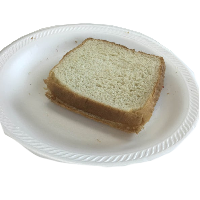

Making a Peanut Butter and Jelly Sandwich
Imagine, if you will, the discomfort, weakness , or pain caused by a prolonged lack of food -- a strong desire or craving. Wash your hands you're about to prepare a peanut butter & jelly sandwich.
Step 1
Procure the necessary supplies listed below:
-
Peanut Butter
-
Jelly
-
Sandwich Bread
-
Butter Knife
-
Plate
Step 2
Navigate two slices of bread per desired number of sandwiches to
your plate.
Step 3
Open the peanut butter and jelly.
Step 4
Using the butter knife, carefully apply approximately 2
tablespoons of peanut butter to one slice of bread, and one table
spoon of jelly to the other.
Step 5
Combine the two slices of bread.

Step 6 (OPTIONAL)
Using the butter knife, carefully remove the crust from the
sandwich.
Step 7
Clean up your mess and enjoy your peanut butter and jelly sandwich!